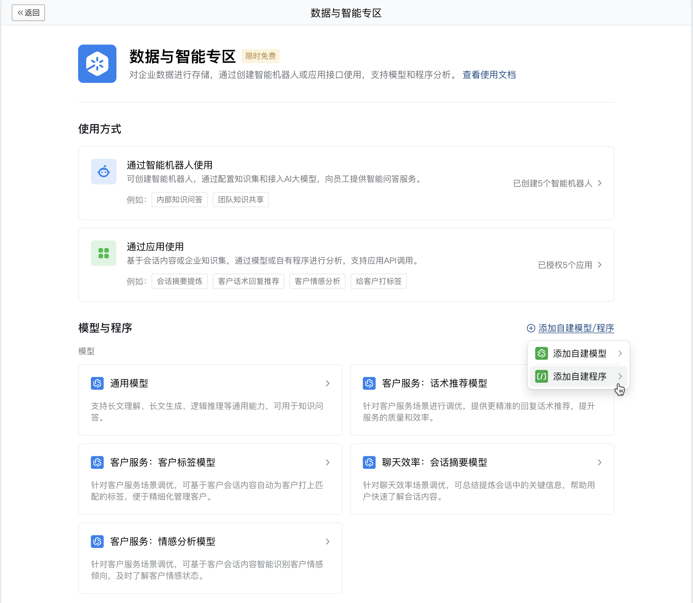
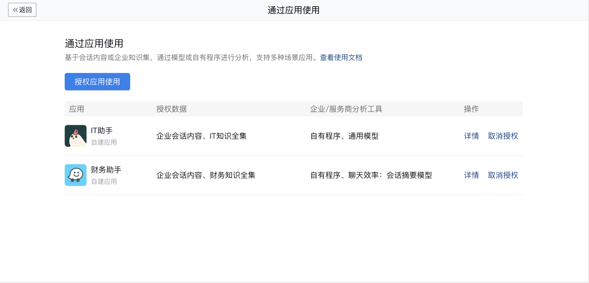
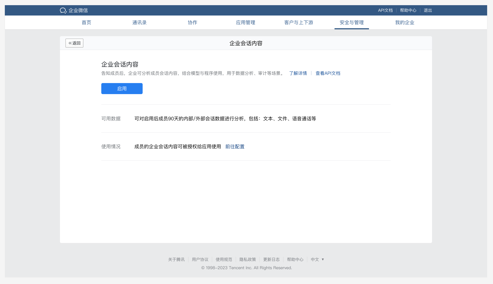
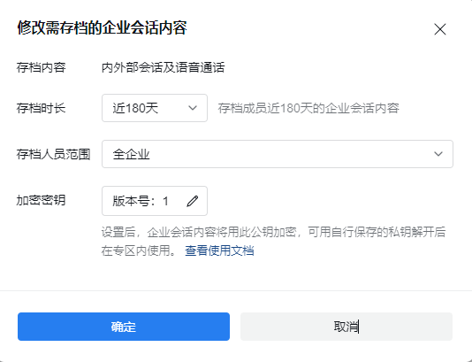
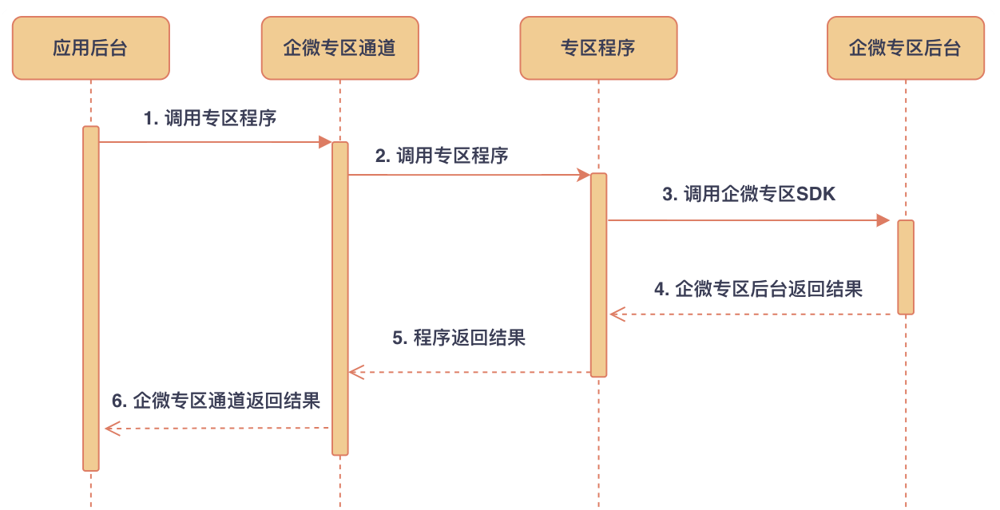
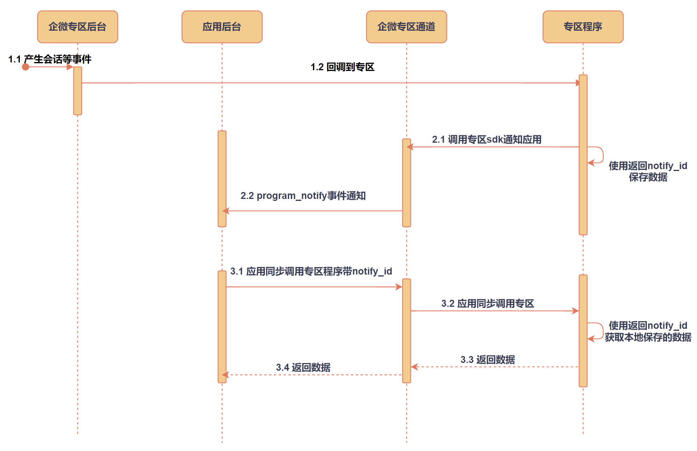

目录
一、如何接入
1. 上传程序
需在「企业管理后台-安全与管理-管理工具-数据与智能专区」中上传企业自有程序。

2. 授权应用使用
在「数据与智能专区-通过应用使用」中，可授权应用数据及工具权限。
- 可使用的数据：包含企业会话内容和企业知识集，至少需选择一类数据用于分析。
- 可使用的工具：包含可用程序和可用模型。可用程序为必填，需企业自行上传部署。

3. 开启会话内容
若需使用企业会话内容进行分析，可在「数据与智能专区-企业会话内容」中授权并开启。

4. 设置公钥
开启会话内容之后，还需要设置加密消息的公钥，企业微信专区将会使用该公钥为存档的消息加密，故只有设置了公钥之后，消息才能存档。

公钥生成可以参考使用openssl命令生成PEM格式的RSA公私钥对
二、如何使用
1. 准备工作
开发者需要准备一个程序，该程序首先需要引用专区SDK，实现获取会话记录等SDK接口的调用。
如果需要在程序中实时接收企业微信专区后台的回调通知，例如“产生会话回调通知”，则需要在程序中起动一个http服务并监听8080端口，用于接收专区后台的通知，接收到请求后，通过SDK对请求进行解密。 具体参考：专区程序接入指引、专区程序示例
2. 调用流程
2.1 应用同步调用专区程序

2.2 应用异步调用专区程序

2.3 专区程序接收事件以及应用接收专区通知

专区程序如何处理应用调用、企业微信回调以及通知应用参考：专区程序使用指引
3.专区程序使用专区SDK
3.1 专区程序通过sdk调用企微后台
企业微信在数据与智能专区中提供一套SDK接口，应用可通过SDK接口获取会话记录与知识集。
| SDK接口 | 接口描述 | 使用场景举例（供参考） |
|---|---|---|
| 获取会话记录 | 可获取授权范围内成员的会话记录，包括会话ID、消息ID、消息发送人、消息接收人、消息发送时间、消息类型 | ● 结合展示组件，展示成员会话内容 ● 统计分析成员会话数据 |
| 获取内部群消息 | 可获取企业内部群信息，包括群主、群成员、群创建时间、群成员入群时间 | ● 结合获取会话记录接口、会话展示组件，按群的维度展示群中会话内容和群信息 |
| 会话名称搜索 | 基于名称搜索群 | ● 用于搜索群，查看指定群名的群会话内容 |
| 会话消息搜索 | 基于文本内容搜索会话消息 | ● 用于搜索消息，查看指定内容对应的会话消息 |
| 关键词规则管理 | 可通过定义关键词、关键行为来定义一个关键词规则，命中规则的消息将回调通知到专区程序 | ● 敏感会话内容、敏感行为预警相关功能 ● 基于特定内容、行为实现的产品功能 |
| 获取会话同意情况 | 获取成员客户的会话存档同意情况 | ● 基于成员客户会话存档同意情况实现的展示分析功能 |
3.2 专区程序通过sdk调用专区模型/程序
企业微信提供内部大模型供应用进行会话内容的分析工作，另外也允许应用根据需要自行上传自有模型和自有程序到专区中并使用。
| SDK接口 | 接口描述 | 使用场景举例（供参考） |
|---|---|---|
| 会话情感模型 | 获取会话消息的情感状态（正中负） | ● 评估企业客户服务质量 |
| 会话摘要模型 | 获取会话消息的摘要内容 | ● 总结客户交流的目的 |
| 客户标签模型 | 根据客户会话给客户打标签 | ● 对聊天中的客户进行标签分类 |
| 话术推荐模型 | 根据企业知识集推荐回复话术 | ● 利用知识集即时回复客户 |
| 企微通用模型 | 自定义提示词进行会话分析 (仅自建应用可用) | ● 更有导向性的会话摘要分析等 |
| 自有模型分析 | 自有模型和协议进行会话分析 | ● 专有数据训练的自有模型 |
| 自有程序分析 | 自有程序和协议进行会话分析 | ● 定制的会话内容分析程序 |
4. 专区程序接收企业微信回调
若用户在企业微信发送消息或者其他操作触发相关事件时，企业微信后台会将用户产生的事件回调到专区程序。若专区程序需要接收事件，需要设置专区接收回调事件。设置应用接收回调的程序后，企业微信会将会话范围内用户相关事件回调到专区该程序所在的服务。参考：专区程序接收事件通知
5. 专区程序回调通知应用后台
若专区程序调用专区通知应用sdk ，则企业微信后台会向当前应用数据回调地址推送应用接收专区通知。调用该sdk后，企微信后台同时会返回notify_id给到专区程序，专区程序可使用notify_id在本地保存数据。应用后台收到通知后可拿到notify_id，并使用notify_id再去调用专区程序，专区程序可使用notify_id返回之前调用sdk时保存在本地的数据。